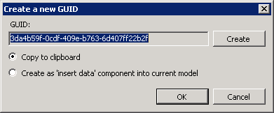

Create GUID
The 'Create GUID' Plugin allows you to generate a random GUID, which can then either be copied to the clipboard or added to the Primary Model of the current Workflow Project.
Component icon
N/A
Author
LogicBase / Symantec
Perform Action
Plugins | Create GUID

BUG: This states "current model" but actually puts it into the  Primary model. Primary model. |
|---|
Alternative
N/A
Location
[Install Drive]:\Program Files\Symantec\Workflow\Designer\Plugins\
DLL
- LogicBase.Plugins.CreateGUID.dll
Code
Generate a GUID
return Guid.NewGuid().ToString();
Copy to Clipboard
Clipboard.SetDataObject(guid, true);
Create Component with the Guid pre-populated.
There is more information in the following Article
Documentation
[Display any related Documentation]
- Title URL
- Chapter/Page #
Support
[Display any related Support Documents]
- Title
- URL